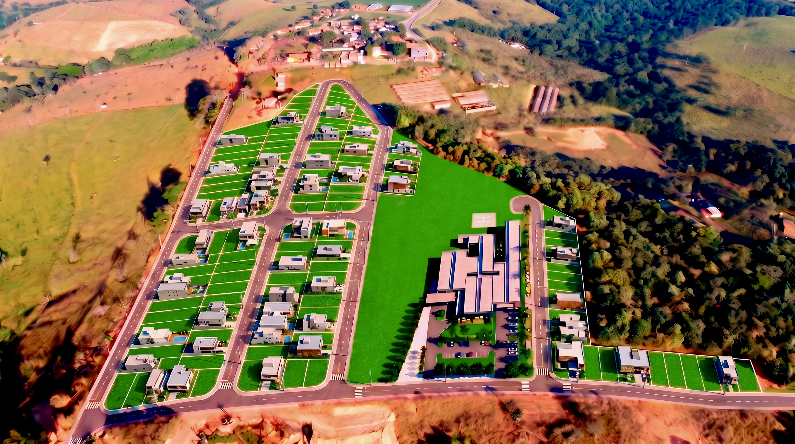
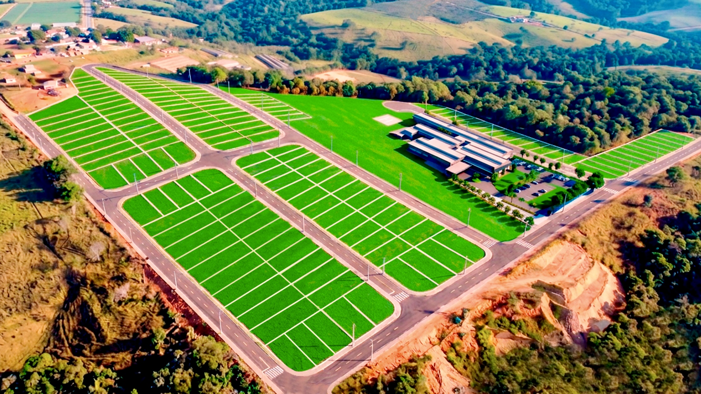
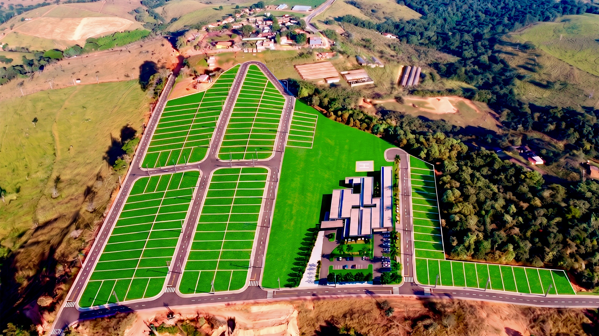
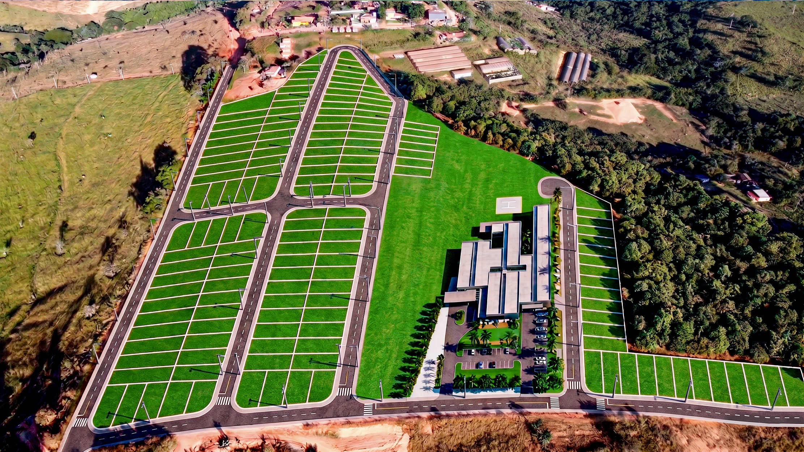
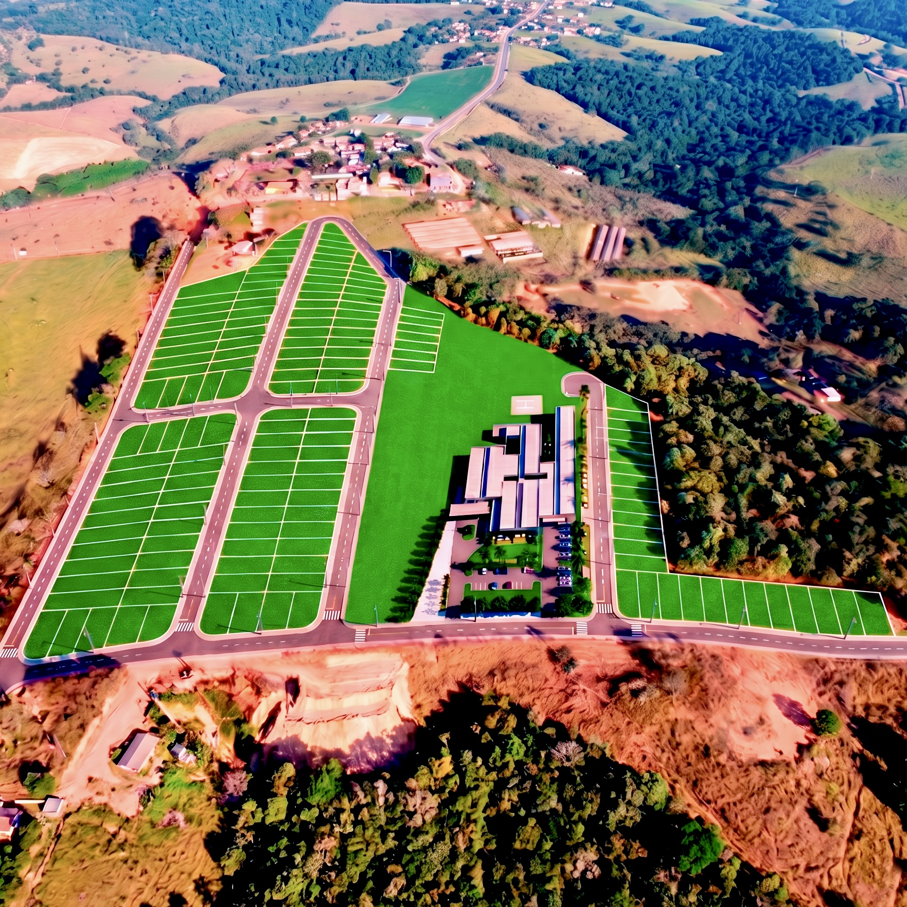
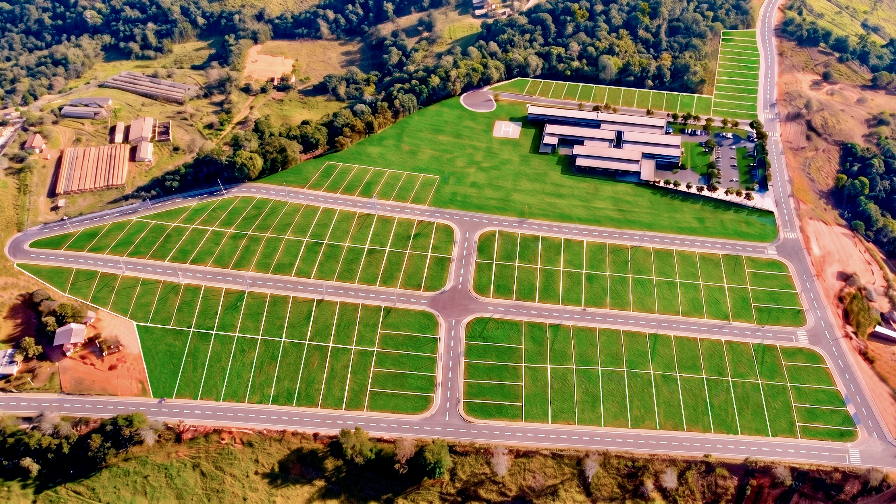
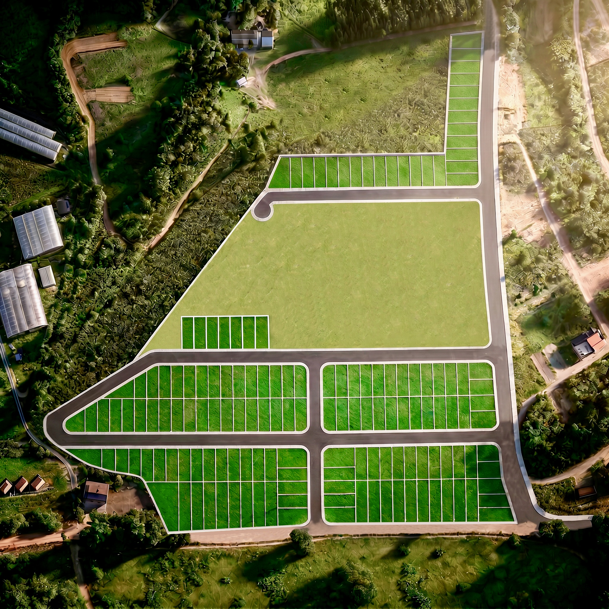
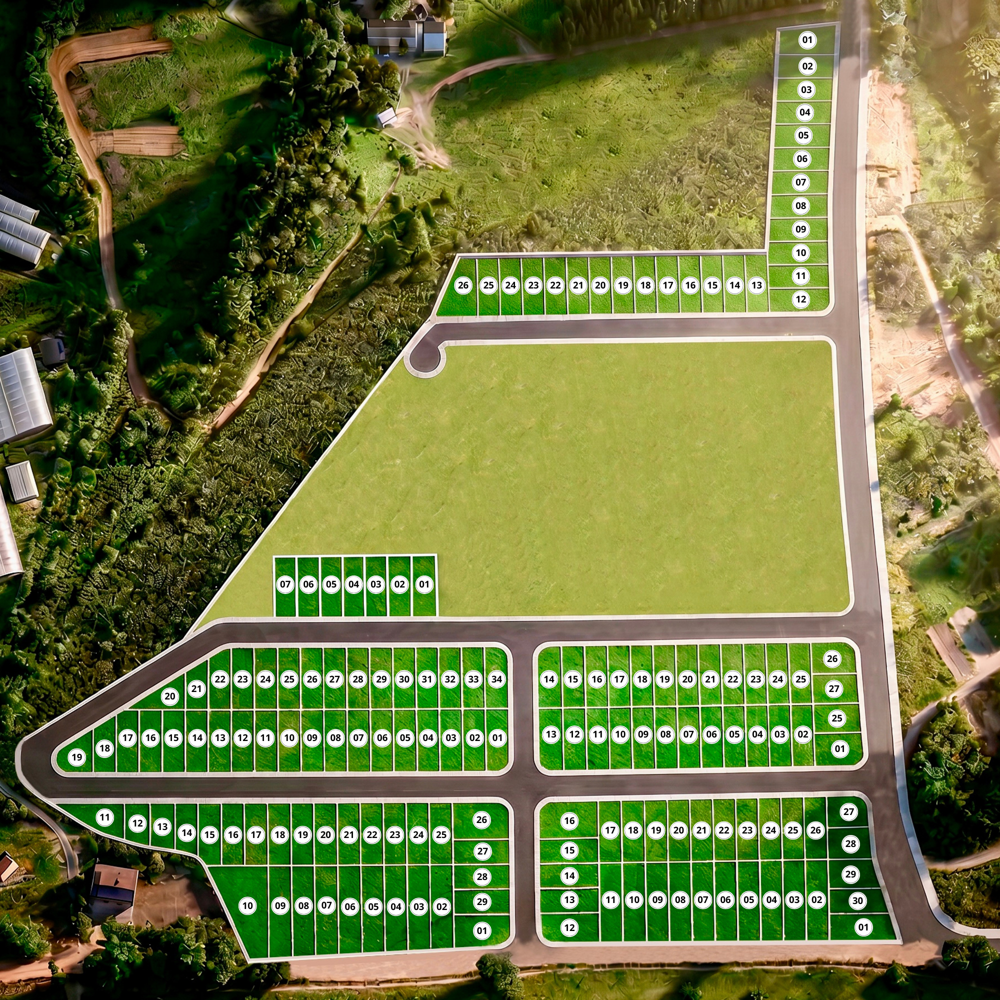

Jardim Alvorada
Loteamento
Imagens ilustrativas em 3D mostram a organização do loteamento, incluindo o traçado das vias, divisão dos lotes e áreas previstas para implantação de serviços essenciais.







